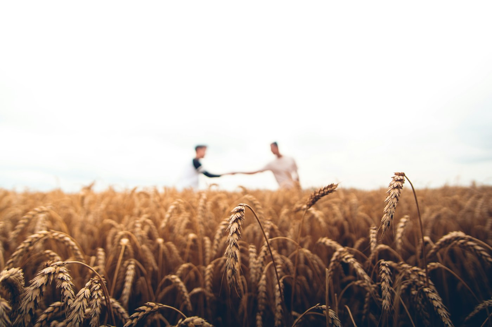
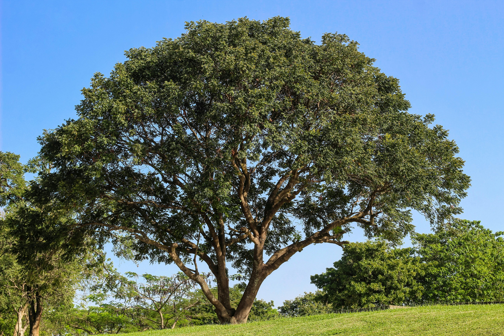

Un engagement pour une agriculture responsable et un impact positif

Nous travaillons en partenariat direct avec les agriculteurs de la région du Saïss, berceau historique de notre activité. En complément de notre propre récolte, nous nous approvisionnons aussi auprès de producteurs partout au Maroc, et pas uniquement dans le Saïss, afin de sélectionner les meilleures matières premières du pays. Cette approche garantit la fraîcheur et la qualité de nos produits, réduit l'empreinte carbone de notre chaîne d'approvisionnement et soutient l'économie rurale marocaine dans son ensemble.
Nos partenaires agriculteurs bénéficient de prix équitables et d'un accès aux marchés internationaux qu'ils ne pourraient atteindre seuls.
Le caroubier est un arbre remarquablement adapté au climat méditerranéen semi-aride. Il nécessite peu d'eau et d'intrants, contribue à la lutte contre l'érosion des sols et séquestre du CO₂.
Nous encourageons nos partenaires à adopter des pratiques agricoles respectueuses de la biodiversité locale.

En faisant travailler des agriculteurs, collecteurs et transformateurs locaux, nous contribuons directement au développement économique de la région du Saïss et à la préservation du savoir-faire agricole marocain.
Contactez notre équipe pour un devis personnalisé ou des informations sur nos produits.